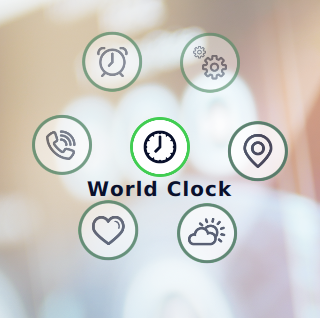

Qt Quick Controls 2 - Wearable Demo

The Wearable Demo consists of an application launcher and a collection of small and simple example applications aimed at wearable devices.
Structure
The main .qml file wearable.qml consists of an ApplicationWindow, a StackView for a stack-based navigation model, and buttons for interactive navigation.
QQC2.ApplicationWindow { id: window ... header: NaviButton { id: homeButton ... onClicked: stackView.pop(null) } footer: NaviButton { id: backButton ... onClicked: stackView.pop() } QQC2.StackView { id: stackView ... onLaunched: stackView.push(page) } } }
Styling
The demo uses a custom Qt Quick Controls 2 style embedded into the demo's resources. Since the style is specific to this particular demo, it only needs to implement a few controls. The style also provides a singleton type that contains various styling attributes, such as fonts and colors.
qml/Style/PageIndicator.qmlqml/Style/Slider.qmlqml/Style/Switch.qmlqml/Style/UIStyle.qml
The style is applied in main() in wearable.cpp:
QQuickStyle::setStyle(QStringLiteral("qrc:/qml/Style"));
The main benefit of using the built-in styling system is that the style selection is fully transparent to the application code. There is no need to import a specific folder that contains the styled controls. This way, the application can be run with other styles too.
Custom Type
The demo application contains a custom button type implemented in qml/NaviButton.qml. The navigation button is used as a home and back button in wearable.qml. NaviButton extends the standard AbstractButton API with properties that control the slide in and slide out transitions and the button image.
QQC2.AbstractButton { id: button property int edge: Qt.TopEdge property alias imageSource: image.source contentItem: Image { id: image ... } background: Rectangle { ... } transform: Translate { Behavior on y { NumberAnimation { } } y: enabled ? 0 : edge === Qt.TopEdge ? -button.height : button.height } }
Launcher Page
The application launcher, which is specified as the initial content above, is implemented using a circular PathView in LauncherPage.qml. Each application is contained within its own .qml file, which is listed in a ListModel on the launcher page.
PathView { id: circularView signal launched(string page) ... model: ListModel { ListElement { title: qsTr("World Clock") icon: "WorldClock/images/worldclock.png" page: "WorldClock/WorldClockPage.qml" } ... ListElement { title: qsTr("Settings") icon: "Settings/images/settings.png" page: "Settings/SettingsPage.qml" } } delegate: QQC2.AbstractButton { ... onClicked: { if (PathView.isCurrentItem) circularView.launched(Qt.resolvedUrl(page)) else circularView.currentIndex = index } } ... }
Applications
The applications are designed for touch input based on what input methods or communication means are typically offered by wearable devices.
Most applications have their own JavaScript files that act as dummy application backends. They illustrate fetching external data and help manipulating or converting the data. In the Navigation and Weather applications, data acquisition is implemented using XMLHttpRequest to read from local files. These files were generated by storing responses from remote servers in JSON format. This code can be easily modified to acquire data from real remote servers.
Navigation
This application displays a walking route from source to destination. This route is obtained as a response by invoking an API provided by https://www.openstreetmap.org/. The response is in JSON format and the corresponding JavaScript file associated with the application helps interpret the response. Currently, it is not possible to specify the source and destination from within the application, but it can be easily added based on the device's capabilities. For example, user input could be implemented as screens with input fields, or can be communicated over Bluetooth/Wifi from a paired app running on another device such as a smart phone or PC.
Weather
This application displays weather information such as temperature, sunrise and sunset times, air pressure, and so on. This information is obtained as a response to invoking https://openweathermap.org/. The response is in JSON format and the corresponding JavaScript file associated with the application helps interpret the response. As with the Navigation application, this application can be modified by adding screens to accept location information to obtain weather data for a given location.
World Clock
This application displays a world clock for different cities. As of now, the list of cities is hard-coded in the application, but that can be changed based on the input capabilities of the device.
Others
The remaining applications return static data for now, but they can easily be modified to process response data obtained from respective services.
Running the Example
To run the example from Qt Creator, open the Welcome mode and select the example from Examples. For more information, visit Building and Running an Example.
Files:
- wearable/wearable.cpp
- wearable/wearable.qml
- wearable/qml/LauncherPage.qml
- wearable/qml/NaviButton.qml
- wearable/qml/Alarms/AlarmsPage.qml
- wearable/qml/Fitness/FitnessPage.qml
- wearable/qml/Fitness/fitness.js
- wearable/qml/Navigation/NavigationPage.qml
- wearable/qml/Navigation/RouteElement.qml
- wearable/qml/Navigation/navigation.js
- wearable/qml/Notifications/NotificationsPage.qml
- wearable/qml/Notifications/notifications.js
- wearable/qml/Settings/SettingsPage.qml
- wearable/qml/Style/PageIndicator.qml
- wearable/qml/Style/Slider.qml
- wearable/qml/Style/Switch.qml
- wearable/qml/Style/UIStyle.qml
- wearable/qml/Weather/WeatherPage.qml
- wearable/qml/Weather/weather.js
- wearable/qml/WorldClock/Clock.qml
- wearable/qml/WorldClock/WorldClockPage.qml
- wearable/wearable.pro
- wearable/wearable.qrc
- wearable/qml/Style/qmldir
Images:
{kind=link}
{kind=link}
{kind=link}
{kind=link}
{kind=link}
{kind=link}
{kind=link}
{kind=link}
{kind=link}